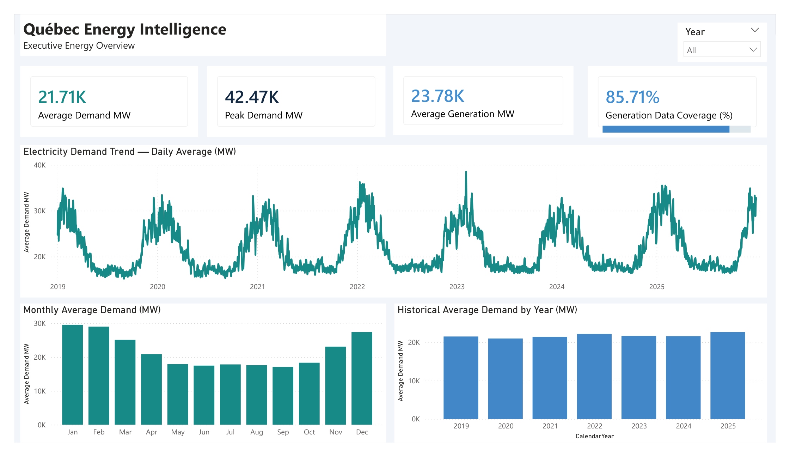

Data sources
Hydro-Québec demand and generation CSVs; historical Montréal weather from Open-Meteo.
A complete analytics project exploring electricity demand, generation, weather relationships, and AI-driven forecasting — built with SQL Server, SSIS, Python, and Power BI.

Five consistent Power BI pages connect the story from historical demand to forecasting. Select a view to explore its real report screenshot.
An auditable ETL pipeline separates ingestion, transformations, analytics, and presentation.
Hydro-Québec demand and generation CSVs; historical Montréal weather from Open-Meteo.
Six packages for staging, validation, warehousing, weather, and ML result imports.
Staging and clean layers, dimensional warehouse, fact tables, views, and quality checks.
Feature engineering, one-hour predictions, multi-day forecasts, and rolling backtests.
Five report pages cover demand, generation mix, weather impact, and AI forecasting.
Results are from historical evaluations; forecast horizons have different error profiles and should not be directly compared.
The repository contains technical project materials, while this site provides a visual introduction for employers and reviewers.
See the SQL scripts, SSIS packages, Python code, and complete project documentation.